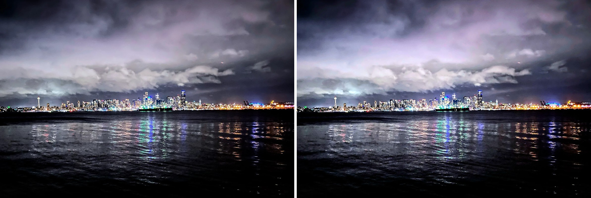

REFRACT
Photography Analysis & Enhancement

IMG_2201_Copy.JPG
Multi-LLM Analysis
73.5/100
Consensus Score
Original Review
gemini
65.0/100
The photo has potential, but is underexposed and lacks vibrancy. Increasing exposure and saturation will make the city lights pop and improve the overall mood.
- increase exposure by 1 stop
- slightly decrease highlights to recover detail in the clouds
- increase saturation by 10% to enhance the colors of the city lights and reflections
openai
82.0/100
The photograph captures a stunning cityscape with a moody atmosphere. Enhancing brightness and vibrance would highlight details, while cropping for composition aligns with artistic principles.
- increase brightness by 15%
- boost vibrance in the city lights
- crop to place the horizon on the upper third line
anthropic
Failed
Analysis failed: Error code: 400 - {'type': 'error', 'error': {'type': 'invalid_request_error', 'message': 'messages.0.content.0.image.source.base64.data: Image does not match the provided media type image/jpeg'}, 'request_id': 'req_011CWmvst1DB82V477oyESCA'}
Combined Improvements Applied:
- increase exposure by 1 stop
- slightly decrease highlights to recover detail in the clouds
- increase saturation by 10% to enhance the colors of the city lights and reflections
- increase brightness by 15%
- boost vibrance in the city lights
- crop to place the horizon on the upper third line
Before & After Comparison
Side-by-Side
